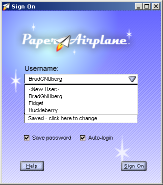

| | |
Table of Contents | Last | Next
Walkthrough - Next-Generation Browsing
Single Sign-On
Never again will you have to juggle passwords between web sites. Instead of signing individually into each Two Way Web site, you sign into the Paper Airplane browser itself when you first start:

Sign-On Dialog
As you access each Two Way Web Site, an authentication process occurs that involves sending special keys instead of passwords. This happens transparently and securely.
Paper Airplane also makes it easy to have multiple user accounts to protect the different identies you may have between Two Way Web Sites:

Choose Username Pulldown in Sign-On Dialog
For more in-depth information see Signing In and Out of the Two Way Web.